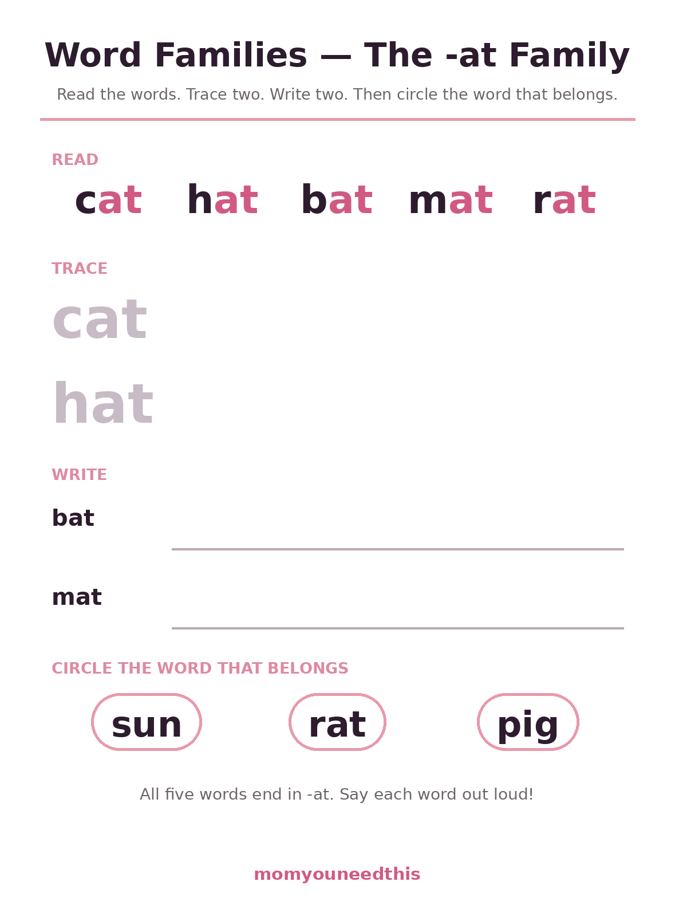
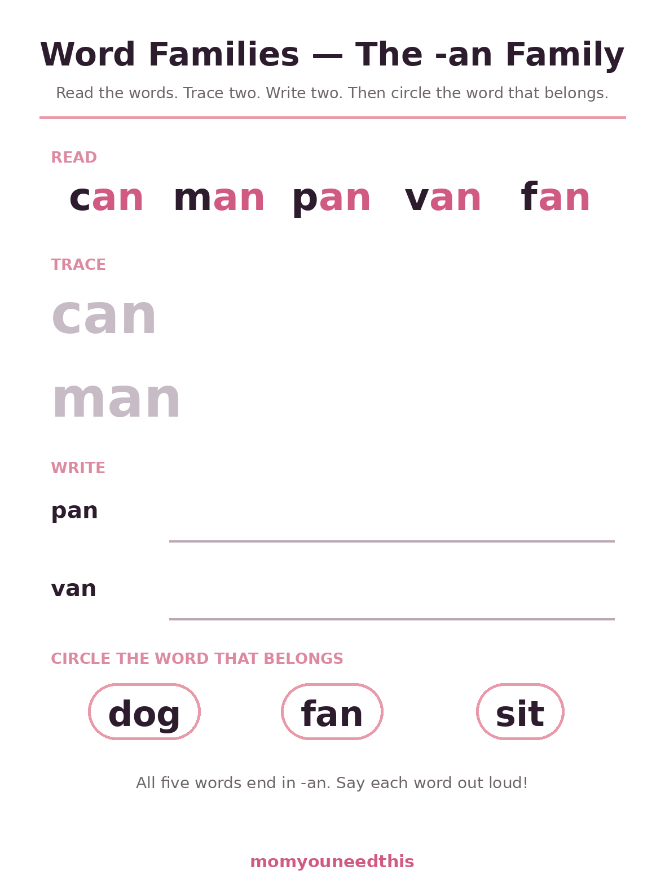
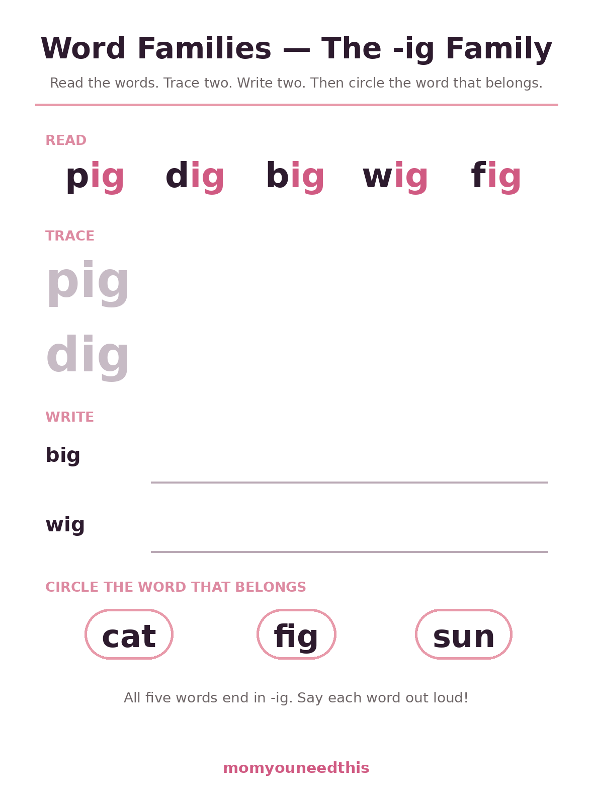
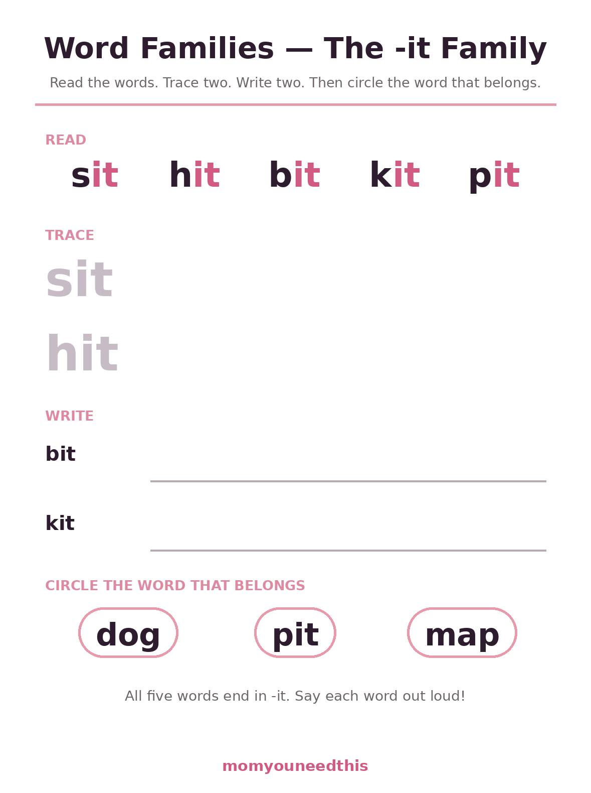
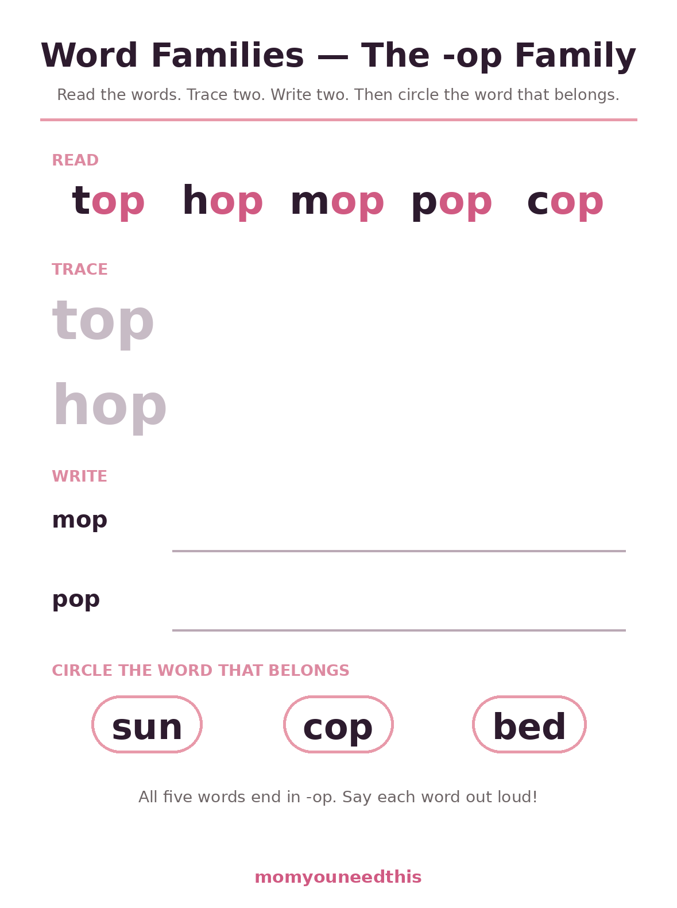
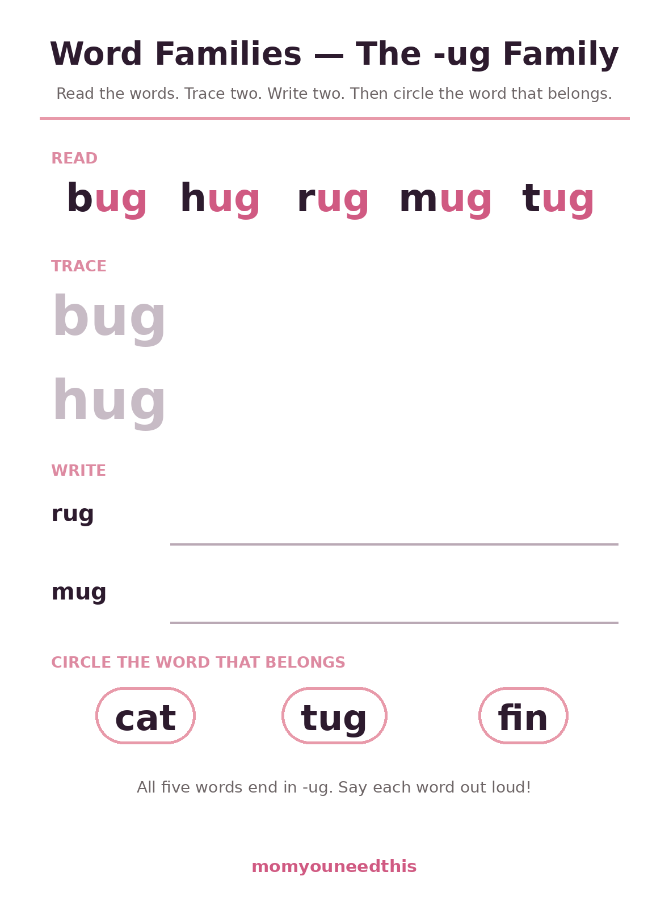

Word Families Six Families to Read, Trace, Write & Sort
Word families are groups of words that share the same ending chunk, so once a child can read the ending -at, a whole row of words — cat, hat, bat, mat, rat — opens up at once. These six free sheets cover the -at, -an, -ig, -it, -op and -ug families for ages 5 to 7, with five words on every sheet to read, trace, write and sort. Print at home, no signup.
Last updated: October 21, 2026
Quick Answer
Word families are word groups that end with the same letters and the same sound, like cat, hat and rat. This set has six free printable sheets — one each for the -at, -an, -ig, -it, -op and -ug families — with 30 words in total. On every sheet your child reads five family words, traces two of them in light gray, writes two more on blank lines, then circles the one word in a mixed row that belongs to the family. Made for ages 5 to 7.
At a Glance
- Skill: Phonics — word families & rhyming chunks
- Ages: 5–7 (kindergarten–grade 1)
- Sheets: 6 (one per family)
- Words: 30 — five per family
- Families: -at, -an, -ig, -it, -op, -ug
- Cost: Free — print at home
🐱 The -at, -an and -ig Families
Start with -at: it is the family almost every early reader meets first, because cat is often the very first word a child reads alone. The -an family follows close behind, and putting the two side by side is a quiet lesson in looking carefully — cat and can differ by a single letter, and noticing that one letter changes the word is exactly the kind of discovery that makes a 6-year-old feel like a detective. The -ig sheet finishes this group with the cheerful pig, dig, big, wig, fig set. On every sheet the routine never changes: read five words, trace two, write two, then circle the family member hiding among two impostors.

🐱 Download Your Free -at Family Worksheet
The -at family: cat, hat, bat, mat, rat — read, trace and write, then circle the word that belongs.
⬇️ Download Free Worksheet 🖨️ Print🎁 Free printable for ages 5–7

🐱 Download Your Free -an Family Worksheet
The -an family: can, man, pan, van, fan — read, trace and write, then circle the word that belongs.
⬇️ Download Free Worksheet 🖨️ Print🎁 Free printable for ages 5–7

🐷 Download Your Free -ig Family Worksheet
The -ig family: pig, dig, big, wig, fig — read, trace and write, then circle the word that belongs.
⬇️ Download Free Worksheet 🖨️ Print🎁 Free printable for ages 5–7
🐷 The -it, -op and -ug Families
The second trio turns the same skill up a notch. The -it family (sit, hit, bit, kit, pit) is full of action words children can act out at the table, which teachers have used for years to keep wiggly readers engaged. The -op family (top, hop, mop, pop, cop) is just as physical — expect hopping. And -ug (bug, hug, rug, mug, tug) ends the set on a smile. Because the format on all six sheets is identical, children stop spending energy on instructions and spend it on the words: by the third sheet, most kids run the whole routine without being told.

🐶 Download Your Free -it Family Worksheet
The -it family: sit, hit, bit, kit, pit — read, trace and write, then circle the word that belongs.
⬇️ Download Free Worksheet 🖨️ Print🎁 Free printable for ages 5–7

🐸 Download Your Free -op Family Worksheet
The -op family: top, hop, mop, pop, cop — read, trace and write, then circle the word that belongs.
⬇️ Download Free Worksheet 🖨️ Print🎁 Free printable for ages 5–7

🐞 Download Your Free -ug Family Worksheet
The -ug family: bug, hug, rug, mug, tug — read, trace and write, then circle the word that belongs.
⬇️ Download Free Worksheet 🖨️ Print🎁 Free printable for ages 5–7
🌱 Why Chunks Beat Letter-by-Letter
A child who sounds out every word letter by letter — c, a, t... cat — is doing three pieces of work for every word and burning energy that should go to understanding the sentence. Word families hand that child a shortcut with real reading science behind it: English words are built from reliable ending chunks called rimes, and the -at, -an and -ig chunks are among the most dependable in the language. Learn to spot the chunk and the front letter becomes the only new information. Five words on a sheet stop being five separate puzzles and become one pattern spotted five times. That is also why these sheets keep the ending highlighted in pink in the READ row — eyes learn to land on the chunk first. The benefit shows up in real books: primers for this age reuse the same small set of families constantly, so a child who owns these six chunks meets familiar faces on almost every page, and familiar faces build the confidence that makes a child ask for one more book.
🔁 Say It, Rhyme It, Catch the Odd One Out
The pencil work is only half of each sheet — the talking matters just as much. As your child reads the READ row aloud, ask them to say the words a second time slowly, stretching the ending: caaat, haaat. Silly voices are encouraged; a robot voice and a mouse voice make the rhyming impossible to miss. The CIRCLE row at the bottom turns that ear into a game: two of the three words are impostors borrowed from other families on this page, and one belongs. Ask your child to defend their pick out loud — 'rat belongs because it ends in -at' — because explaining the pattern is a deeper level of learning than spotting it. If they get one wrong, do not correct it flatly; read all three words together and let them hear the odd one out. Children who catch their own mistakes remember the fix far longer than children who are simply told.
🖨️ How to Use These Worksheets
- One family at a time. Print a single sheet and finish it well rather than racing through all six — the chunk only sticks when it has been read, traced and written in one sitting.
- Read across the row first. Point at each word in the READ row and say it together, stretching the ending: c-at, h-at. Hearing that the ends match is the whole point of the sheet.
- Trace, then write. Tracing in light gray warms up the hand; the WRITE lines beside them have a prompt word to copy from, so the work is handwriting, not guessing.
- Save the circle game for last. The CIRCLE row mixes in two words from other families. If your child can spot the one that belongs — and say why — the family is learned. Then move on to the CVC word worksheets for a different kind of practice.
📚 More Reading for Moms & Kids
🧒 Older Kids
Every worksheet in the Older Kids section, in one hub. Browse Older Kids.
👀 Sight Words
The flashcards and word lists that pair with this kind of practice. See the flashcards.
✏️ Sight Word Practice Pages
Read, trace and write sheets for all 92 Dolch words. Practice sight words.
🍎 CVC Word Worksheets
Twenty short vowel words in the same read, trace, write routine. Practice CVC words.
🔊 Phonics Worksheets
Beginning sounds, ending sounds, blends and vowels — listening-first practice. Try phonics sheets.
✍️ Cursive Practice Sheets
The same letters, joined up — trace and copy every letter. Try cursive.
❓ Word Families FAQ
What are word families?
They are groups of words that share the same ending letters and ending sound — cat, hat, bat, mat and rat all end in -at, so they rhyme and they are spelled alike at the end. Beginning readers learn the ending chunk once and then read every word in the family faster, instead of sounding out each word letter by letter from scratch.
Which families are in this set?
Six of the most useful first families: -at, -an, -ig, -it, -op and -ug, five words on each sheet. The -it sheet (sit, hit, bit, kit, pit) is the one parents ask us about most — if you came looking for it word family worksheets in particular, it is the fourth sheet above.
What order should we do the sheets in?
The order on this page works well: -at first, then -an, because the two differ by one letter and the contrast teaches careful looking. After that, any order is fine — many children pick the -ug sheet next because bug and hug make them laugh. One sheet per sitting is plenty.
My child reads the words but writes some letters backwards. Is that normal?
Yes — letter reversals (writing b for d, or a backwards g) are completely normal at 5, 6 and even 7. The tracing rows on these sheets help precisely because the hand practices the correct shape right before writing. If reversals are the only worry, keep going; they usually fade with practice during first grade.
Are these word families worksheets free?
Yes — all six sheets are free to print at home, as many times as you like, with no signup and no email.